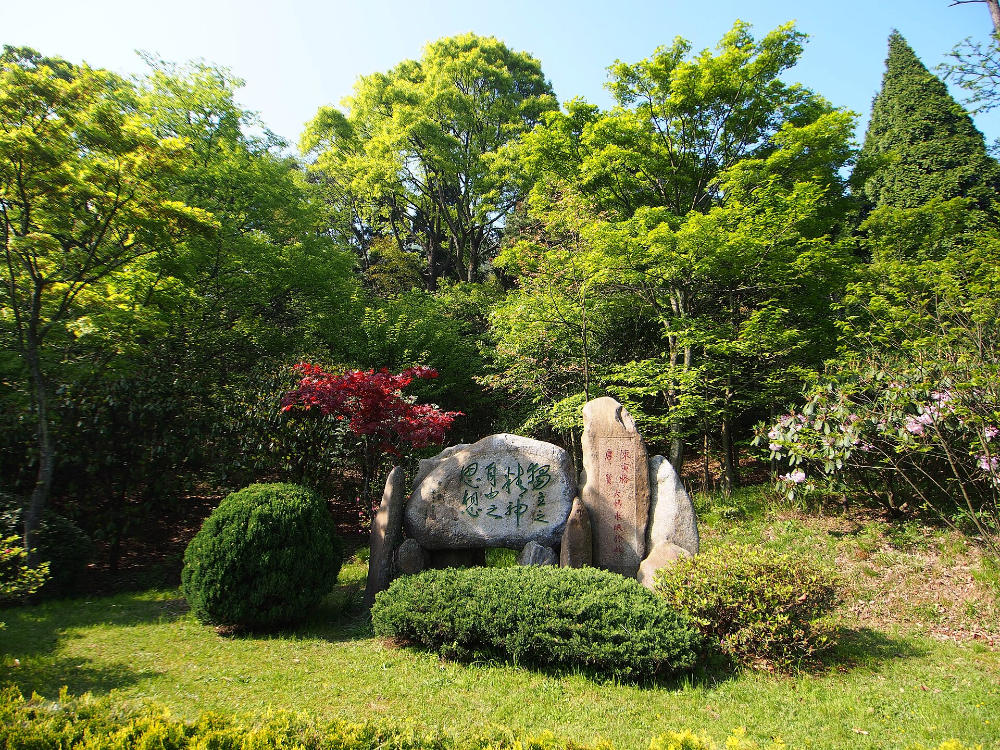

第 20 章
公约的缝隙
“敦煌者，吾国学术之伤心史也。”
陈寅恪写下这句话是在1930年，为陈垣所编《敦煌劫余录》作序。此后大半个世纪，这句话被反复引用、刻碑、录入课本，几乎成了中国人谈论流失文物的标准起句。但引用的热情往往淹没了序言中另一段更冷静的话。陈寅恪在那篇序言的结尾写道：“今后斯录既出，国人获兹凭借，宜益能取用材料以研求问题，勉作敦煌学之预流。庶几内可以不负此历劫仅存之国宝，外可以襄进世界之学术。”

这段话的关键词不是“伤心”，而是“取用材料以研求问题”。它指向的是一种学术层面的回应——用研究来弥补损失，以学问来重建解释权。
然而，当“国宝”这个概念在二十世纪下半叶逐渐凝结为一种携带着强烈民族情感与政治符号重量的表述时，它所要求的回应方式就不再是学术的，而是法律的、外交的、政治的。它要的不是研究，而是归还。
1962年，《文物》期刊发表了《新疆天山以南的石窟》。这份报告由西北文化局的新疆文物调查工作组撰写，该工作组成员包括阎文儒、常书鸿等人，系统记录了柏孜克里克千佛洞等遗址在经历二十世纪初西方探险队大规模切割取走壁画后的残存状态。报告附有洞窟测绘图纸、残存壁画的位置标注、被切割墙面的尺寸记录。
这些数字和线条构成了一份沉默的清单：第9窟主室北壁，高2.3米，宽4.5米，壁画已失，切割痕迹清晰；第20窟甬道东壁，残留菩萨衣纹下半部，上半部被整块揭取，断面整齐如刀削。工作组在每一个窟内做着同一件事——记录失去了什么。
1928年，中瑞西北科学考查团成员考古学家黄文弼在吐鲁番考察时，途径柏孜克里克千佛洞进行探查，记录下许多壁画已被勒柯克等人割取，剩余部分也遭到破坏。他的考察成果刊登于《吐鲁番考古记》中。这是中方对这一遗址损失的最早系统性记录之一，为后来的追索研究奠定了早期基础。
他们用考古学的语言为缺席之物建立档案。这份档案的问世，标志着中国开始用现代学术方法对自己的文物损失进行系统性清点。
然而，当这些清点成果在数十年后被投入国际文物返还的法律实践时，一种深刻的错位浮现出来：来源研究可以证明某件文物从某个洞窟的某面墙上被切下，可以被运往柏林的某个博物馆，可以出现在某次拍卖的图录中，但这条清晰的证据链一旦遭遇国际公约的时间红线，便如同撞上一堵透明的墙。看得见来处，走不通归途。
国际社会构建文物返还法律框架的努力，始于对战争劫掠的直接回应。1954年，联合国教科文组织在海牙通过了《关于发生武装冲突时保护文化财产的海牙公约》及其议定书。这份公约的诞生背景与第二次世界大战的惨痛教训紧密相连——纳粹德国对欧洲各国艺术品的大规模系统性掠夺，日本在亚洲占领区的文物劫运，使国际社会意识到需要一部专门保护文化财产免受战争损害的规则体系。
公约确立了“文化财产”作为受保护对象的特殊地位，规定占领方不得将文化财产作为战争赔偿或任意占有，并要求各缔约国在和平时期即建立保护措施。
然而，1954年公约的效力指向是明确的：它规范的是未来可能发生的武装冲突中的行为，而非已经完成的历史劫掠。对于那些在十九世纪末至二十世纪上半叶，在殖民扩张、探险考察、不平等贸易等复杂历史条件下流出国境的文物，这份公约提供不了任何法律杠杆。它的时间箭头指向未来，而流失文物的伤痛埋在过去。
这一时间性困境在国际法的发展中反复出现。1970年，联合国教科文组织通过了《禁止和防止非法进出口文化财产和非法转让其所有权的方法的公约》。这是国际社会首次尝试构建一套针对和平时期文物非法流转的规范体系。公约的制定过程本身，就是一场持续数年的外交博弈。参与谈判的国家大致分为两个阵营：一方是以墨西哥、秘鲁、埃及、印度等为代表的文物原属国，它们拥有丰富的考古遗存，在殖民时期或更早的历史阶段经历了大规模文物外流；
另一方是以美国、英国、法国、德国、瑞士等为代表的文物市场国，它们的博物馆和私人收藏中汇聚了来自世界各地的文物，同时也是全球艺术品拍卖市场的中心。原属国阵营的核心诉求是建立一套具有溯及力的返还机制——不仅阻止未来的非法流转，也要为追索历史上流失的文物提供法律依据。市场国阵营的立场则截然相反：公约只能规范其生效后的行为，不能追溯既往。
这场博弈的结果体现在公约的最终文本中。1970年公约确立的核心原则之一，便是以公约对缔约国生效的时间为关键界限。对于公约生效前已经完成的文物转移，公约不赋予强制返还的效力。
这一条款并非法律技术上的疏漏，而是国际政治力量对比的直接体现。它保护了西方主要博物馆和私人藏家基于历史原因获得的庞大收藏的合法性基础，同时也将大量在十九世纪末至二十世纪上半叶流散的中国文物隔离在了法律追索的射程之外。关于溯及力条款的争论，在谈判记录中占据了大量篇幅。
墨西哥代表曾提出，如果公约不解决历史问题，那么对于那些在殖民时期被系统性掠夺的国家而言，公约将形同虚设。印度代表指出，许多亚洲和非洲国家的文物损失发生在殖民统治时期，如果公约仅规范未来的行为，就等于默认了殖民掠夺的成果。
但美国代表团的回应代表了市场国的典型立场：法律不能改变历史，只能规范未来；如果赋予公约溯及力，将引发无穷无尽的法律纠纷，动摇博物馆收藏的稳定性，最终损害的是文化遗产的公共展示与学术研究。英国代表补充了一个后来被反复引用的论点：许多文物在离开原属国时，依据当时的法律并非“非法”——殖民地的法律体系由宗主国制定，探险队在获得殖民地当局许可后进行的发掘和收购，在当时是“合法”的；用后世的道德标准和法律规范去评判前人的行为，在法律逻辑上站不住脚。
这一论点在法律技术上确实有其严密之处，但它巧妙地回避了一个问题：那些“当时的法律”本身，就是在不平等权力关系下制定的。瑞士代表在谈判中扮演了一个微妙的角色。
作为全球艺术品自由贸易的重要枢纽，瑞士对任何可能限制文物市场运作的国际规则都保持高度警惕。瑞士代表团的发言记录显示，他们反复强调“法律确定性”原则——财产权的转移一旦完成，就应当受到保护，否则整个艺术品市场的信用基础将被动摇。这一立场得到了英国和美国的支持。
最终，1970年公约在溯及力问题上采取了妥协方案：公约文本本身不具溯及力，但序言部分承认“各国对于本国文化遗产负有保护责任”，并呼吁各国在双边基础上协商解决历史遗留问题。这扇留出的窗户日后成为中国等文物原属国推动双边返还协议的法律支点，但在公约框架内，它不构成强制义务。
中国在1970年公约制定过程中的位置是微妙的。当时中国尚未恢复在联合国的合法席位，没有参与公约的起草与谈判。公约通过后，中国也并未立即加入。这一时期的观望态度，既与当时的国际政治环境有关，也反映了中国对于以西方国家主导的国际法律体系处理自身文化遗产问题的审慎。直到1989年，中国才正式加入1970年公约。
此时距离公约通过已近二十年，距离敦煌藏经洞开启已近九十年。加入公约意味着中国接受了其规则框架——包括“不溯及既往”这一核心原则。这是一个务实的选择：在国际法律体系中，拒绝加入并不会改变规则，只会使自己失去在规则内发声和运作的位置。加入公约后，中国开始利用公约提供的机制——要求缔约国对非法出境的文物实施进口管制，通过外交途径提出返还请求——但这些机制的效力范围，始终被限定在公约生效之后发生的非法流转。
1995年，国际统一私法协会通过了《关于被盗或非法出口文物的公约》。这份公约试图在1970年公约的基础上向前推进一步，为文物返还提供更具体的私法救济途径。公约规定，被盗文物的占有人应当返还文物，即使该占有人是“善意取得”——即不知道且不应当知道文物是被盗的。这一条款触及了文物市场的一个核心问题：许多流失文物在经历多次转手后，最后的持有人往往声称自己是合法购买，已经取得了“善意”所有权。
1995年公约试图突破这一抗辩，但它的适用同样受到时间限制。公约规定，返还请求必须在请求方知道文物所在地和占有人身份后三年内提出，并且在任何情况下，自被盗时起五十年内提出。对于在十九世纪末至二十世纪初流失的中国文物而言，五十年时效早已届满。公约还允许缔约国声明将时效延长至七十五年，但即便按此计算，二十世纪初流失的文物也已经越过了这条线。
这三份公约——1954年海牙公约、1970年教科文组织公约、1995年国际统一私法协会公约——构成了当代国际文物返还法律体系的基本框架。它们各自处理不同层面的问题：海牙公约针对武装冲突中的文化财产保护，教科文组织公约针对和平时期的非法进出口与所有权转让，国际统一私法协会公约则提供了跨境追索的私法途径。但它们共享一个结构性特征：时间界限。这个界限将二十世纪划分为两个不同的法律空间：此后的文物非法流转可能受到法律追究，此前的历史流失则被归入法律之外的领域。
对于中国而言，这意味着敦煌藏经洞的经卷、柏孜克里克的壁画、龙门石窟的浮雕、天龙山的佛首——这些在二十世纪上半叶离开原境的文物，无论其离开方式在今天看来多么不义，都无法通过现有的国际公约体系获得强制返还的法律救济。
这一法律现实在具体的追索实践中反复得到验证。当中国方面依据1970年公约向某国提出返还某件二十世纪初流失文物的请求时，对方博物馆的法律顾问通常会给出一个标准答复：该文物在公约对本国生效之前已经进入馆藏，公约不具溯及力，因此不存在返还的法律义务。
这份答复在技术上是准确的。它引用的正是公约文本中关于时间效力的条款。答复函的措辞通常冷静、专业、无可辩驳。它不涉及文物是如何离开中国的——是被盗凿、被切割、被低价收购还是在战乱中流失——它只关注一个技术性问题：时间。当流失发生在公约的管辖范围之外时，所有关于流失过程的证据在法律上都不产生效力。来源研究可以建立一条完整的事实链条，但这条链条在法律面前被时间红线拦腰截断。
一位西方主要博物馆的馆长曾在非公开场合解释其立场。他的博物馆收藏有一批二十世纪初从中国流出的佛教造像。当收到来自中国的返还请求时，他的回应包含了几层论证。
第一层是法律论证：这批造像的入藏时间早于1970年公约，博物馆是合法取得并善意持有。第二层是保护论证：这批造像在博物馆的专业条件下得到了妥善保存，如果留在原址，可能早已毁于战乱、灭佛运动或自然风化。第三层是普世论证：博物馆的收藏向全世界公众开放，这些造像已经超越了原属国的文化边界，成为“人类共同遗产”的一部分，将它们局限于原属国的民族叙事中，反而限制了其文化意义的充分展开。
这三层论证在法律、历史和文化哲学的层面上构成了一套完整的辩护体系。它们并非毫无道理。二十世纪中国经历了持续的战乱、社会动荡，许多留在原地的文物确实遭受了严重破坏。博物馆的专业保存条件确实延长了这些文物的物质生命。
但这一论证也有其盲点：它略去了文物离开原境的过程——切割、盗凿、低价收购、不平等交易——而将叙事起点设定在文物进入博物馆之后。保护的结果被用来为获取的方式提供合法性。这是一种时间上的修辞策略：截断前因，只谈后果。
拍卖行的法律顾问在处理类似问题时，展现出另一种专业姿态。当一件来源可追溯到二十世纪初中国流失的文物被送上拍场时，拍卖图录中通常会出现一段法律声明。这段声明的措辞经过精心设计：它不会否认文物的中国来源——事实上，中国来源往往是这件文物的价值所在——但它会明确指出，该文物在1970年公约对相关国家生效之前已经离开原属国，依据当时的法律和惯例，其出口和转让并非“非法”。这一声明的功能是在法律上为拍卖行和买家提供保护：它承认文物的历史来源，但同时划清法律责任的边界。买家可以放心购买，因为拍卖行已经完成了法律尽职调查——至少是形式上的尽职调查。
至于文物在二十世纪初离开中国的具体方式——是通过探险队的切割，通过古董商的低价收购，还是在战乱中流失——这些细节在法律声明中通常不会出现。它们属于历史，不属于法律事实。
有一位拍卖行的法律顾问曾在图录的页边留下铅笔批注。那是一份1950年代的拍卖图录，其中一件拍品的说明旁写着：“Loo, lot 43, 1932？”这个简短的疑问句指向的是卢芹斋——那位在二十世纪上半叶将大量中国文物输往西方的古董商。法律顾问在核查这件拍品的来源时，发现了它与卢芹斋之间可能的关联。但这一发现并未出现在最终的拍卖图录中。图录中的来源说明只追溯到“欧洲私人收藏，1950年代入藏”——将时间线截断在一个安全的位置。
那支铅笔留下的问号，是一个法律从业者在尽职调查中触及历史真相时的瞬间迟疑。但迟疑之后，工作照常进行。这种法律与历史之间的分离，在一位联合国教科文组织“促使文化财产送回原属国或归还非法占有的文化财产政府间委员会”的调解员身上体现得尤为具体。
该委员会成立于1978年，是教科文组织为处理1970年公约无法覆盖的历史遗留问题而设立的协商机制。它的性质是调解而非裁决——委员会没有强制执行力，只能为争议双方提供一个对话平台。
这位调解员曾参与多起涉及中国流失文物的斡旋。他的工作方式不是援引法律条文，而是寻找双方都能接受的折中方案。
在某些案例中，他促成了长期借用协议——博物馆保留所有权，但将文物长期出借给原属国的博物馆展览。在另一些案例中，他推动双方共同开展来源研究，将追索争议转化为学术合作项目。
但更多时候，他的斡旋无果而终。原因很简单：当一方坚持法律权利，另一方坚持道德权利时，调解的空间极为有限。
博物馆方面可以同意出借文物，但拒绝讨论所有权问题；中国方面可以接受借用作为临时安排，但不愿因此放弃所有权主张。双方在“借用”这一形式上可以达成暂时的一致，但对“借用”的法律含义心照不宣地保持不同的理解。博物馆将借用视为所有权的行使——出借是所有权人的权利；
中国方面则将借用视为返还进程的一个步骤——借用意味着承认文物与中国的关系。
这种默契维持了表面的合作，但深层的分歧从未消除。他在一份内部报告中写过这样一段话：1970年公约划定的时间界限，为大量历史流失文物关上了法律返还的大门，但同时也创造了一个法律之外的灰色空间。在这个空间里，各方不再受法律规则的严格约束，而是依据各自的道德立场、政治考量和实际利益进行博弈。这种博弈有时比法律诉讼更灵活，但也更不确定。它的结果取决于双方的力量对比、意愿强弱和外部压力，而非任何既定的规则。
这段话精确地描述了公约体系的实际运作状态。法律划定了清晰的边界——1970年是一条线，1995年是另一条线——但边界之外并非真空。在那些法律无法覆盖的领域，追索与持有、道德与权利、历史与现状之间的张力并未消失，只是转移到了别的场域。
有一件通过外交谈判而非法律诉讼成功返还的案例，恰好说明了这种灰色空间中的运作逻辑。
那位西方博物馆馆长收到中国方面的追索请求时，他的办公桌上摊着三份文件。第一份是中方提供的来源研究报告——详尽、严谨，附有洞窟编号、切割痕迹比对、历史照片与现存状态的对照分析。第二份是1970年公约的文本，关于时间效力的条款被荧光笔标出。第三份是他需要签署的回复函草稿，法律顾问已经拟好了核心段落：本馆所藏该批造像于1914年入藏，早于1970年公约对本国生效时间，公约不具溯及力，本馆无返还之法律义务。
他在回复函上签字之前，曾与法律顾问有过一次简短的对话。他问，如果抛开法律不谈，单从事实上看，这批造像确实是从中国的洞窟中切下来的，这一点没有争议吧？
法律顾问的回答很干脆：事实层面没有争议，但法律层面的事实不等于历史事实。法律事实需要被纳入法律的时间框架内才能产生效力。这批造像离开中国的时间，使它们落在了1970年公约的管辖范围之外。在法律意义上，它们不是“非法出口的文物”，而是“公约生效前已经完成转移的财产”。馆长点了点头，签了字。
他后来在一次学术会议上解释自己的立场时，没有重复法律顾问那套技术性表述，而是选择了更具哲学意味的措辞。他说，博物馆的使命是保护人类共同的文化遗产，而不是充当历史上每一次不义的裁判者。如果每一件入藏时间超过一个世纪的文物都要追溯其原始取得方式，那么世界上几乎所有大型博物馆的收藏基础都将被动摇。
这种动摇不会让文物回到原属国——它们中的许多在原属国可能根本无法得到同等水平的保护——而只会让文物退出公共视野，流入私人藏家的地下室。公共博物馆的“善意保管”，即使其取得方式在今天看来存在问题，也比僵化的所有权回归更能服务于文化遗保护的长远利益。
这番话在会议上赢得了不少同行的点头。但一位来自埃及的与会者在茶歇时私下说了一句：他讲的保护是事实，但他不讲的是，这种保护的前提是我们失去了对文物的控制权。保护是结果，但获取的过程被略去了。我们不能用保护的结果来为获取的方式辩护，就像不能用一家银行妥善保管了赃款来证明抢劫的正当性。这番话没有被记录在会议纪要中。
那位拍卖行的法律顾问面对的是一尊北齐时期的石雕菩萨立像。像高一百三十七厘米，石灰岩材质，菩萨面容沉静，衣纹流畅，双手残缺——据判断，残缺发生在二十世纪之前。像的背部有切割痕迹，显示它曾经是某座石窟或寺庙建筑的一部分。拍卖行在征集到这件拍品后，法律顾问开始了标准的尽职调查程序。他追溯了这件立像的来源链条：1980年代由一位法国私人藏家从巴黎一位古董商处购得；那位古董商1950年代从一位退役军官手中获得；军官声称立像是1940年代在中国北方驻防期间“获得”的。链条到这里就断了。再往前追溯，没有任何文件记录。
法律顾问注意到了“1940年代”这个时间节点。如果立像确实是在那个时期离开中国的，那么它早于1970年公约，也早于中国1950年颁布的《禁止珍贵文物图书出口暂行办法》。依据当时的法律——无论是中国的还是国际的——这次出口都很难被界定为“非法”。当时的中国正处于战争状态，文物保护的法规体系尚未建立，而国际法对于和平时期文物出口的限制更是付之阙如。他在尽职调查报告的结论栏中写道：依据现有文件，本件拍品于1970年公约生效前已离开原属国，不适用公约之返还条款。建议图录中注明“1970年前已存在于欧洲私人收藏”。
图录最终印出来时，来源说明只有一行字：“法国私人收藏，1980年代购自巴黎古董商。”
法律顾问知道这行字省略了多少东西——省略了军官的“获得”，省略了切割痕迹所暗示的暴力分离，省略了那尊菩萨曾经站立在某座中国石窟中的全部历史。但这不是他的职责范围。他的职责是确保拍卖行不会因为出售这件拍品而陷入法律纠纷。他完成了这个职责。
至于那尊菩萨是如何从石窟的墙壁上被切割下来，如何在战乱中被运出中国，如何在欧洲的古董市场辗转数十年——这些属于历史学家的领域，不属于法律顾问的办公桌。
他在报告的附录中保留了一份来源研究的原始材料，包括切割痕迹的照片和与已知石窟风格的比对分析。这份附录没有被公开。它存在档案柜里，和数百份类似的附录一起，构成了一个沉默的平行档案——记录着那些在法律上“清白”的文物背后，无法被法律语言翻译的历史。
那位联合国教科文组织政府间委员会的调解员，在斡旋一件二十世纪初流失的青铜器时，深切体会到了法律框架之外的灰色空间究竟有多么难以操作。这件青铜器属于中国西周时期，1910年代由一位英国铁路工程师带出中国，此后数十年间多次转手，最终进入一家欧洲博物馆的收藏。
一批二十世纪初流失的中国文物，在法律上早已越过了1970年公约的时间红线，强制返还的路径被堵死。
但经过数年的外交接触，持有方最终同意将文物归还。这一结果并非基于法律义务，而是基于一系列非法律因素的组合：持有方希望改善与中国的外交关系，中国方面在贸易谈判中做出了某些让步，国际舆论的压力使得持有方不愿被视为“殖民掠夺的继承者”。法律在其中扮演的角色是间接的——它为谈判提供了一个框架，但最终起作用的不是条文，而是利益。
这个案例表明，当法律公约在“不溯及既往”的原则下为大量历史流失文物关上了强制返还的大门，它实际上将博弈推回了法律之外更广阔的场域。
市场伦理、学术合作、公共舆论以及新兴的数字技术领域——在这些场域中，各方继续争夺着解释权与影响力。法律划定了清晰的战场边界，也留下了巨大的模糊地带。
1924年5月，苏联政府声明放弃沙俄剩余的庚子赔款，提倡将这笔款项用于中国教育事业。
1924年5月，苏联政府声明庚子赔款是帝国主义列强强加给中国人民的不义赔款，决定放弃沙俄剩余全部庚子赔款，提倡将放棄的赔款作为中国教育款项。
这一姿态在当时的历史语境中具有多重含义：它既是对沙俄帝国主义遗产的切割，也是新生的苏维埃政权对中国释放的外交善意。
但若将这一事件放在文物流失的长时段历史中观察，它的意味更为复杂。庚子赔款本身就是不平等条约体系的产物，而苏联的放弃声明，某种程度上承认了这种不平等。
然而，那些在庚子赔款的阴影下、在更早或稍晚的殖民扩张与探险考察中流出国境的中国文物，却从未获得过类似的‘放弃’声明。它们安静地待在西方博物馆的展厅里，在法律的时间红线保护下，不必面对任何强制返还的压力。
正是在这些法律无法完全覆盖的缝隙中，关于文物的归属、价值与意义的争论，以另一种方式继续展开。
公约的缝隙不是法律体系的缺陷——从法律技术的角度看，不溯及既往是维护财产权秩序的必要原则——但它确实制造了一个持久的张力场。在这个场域中，‘国宝’所携带的民族情感与法律的冷静框架之间的摩擦，从未真正平息。
它只是被转移到了别的舞台——比如拍卖行，那里的人们贩卖着关于文物的故事。